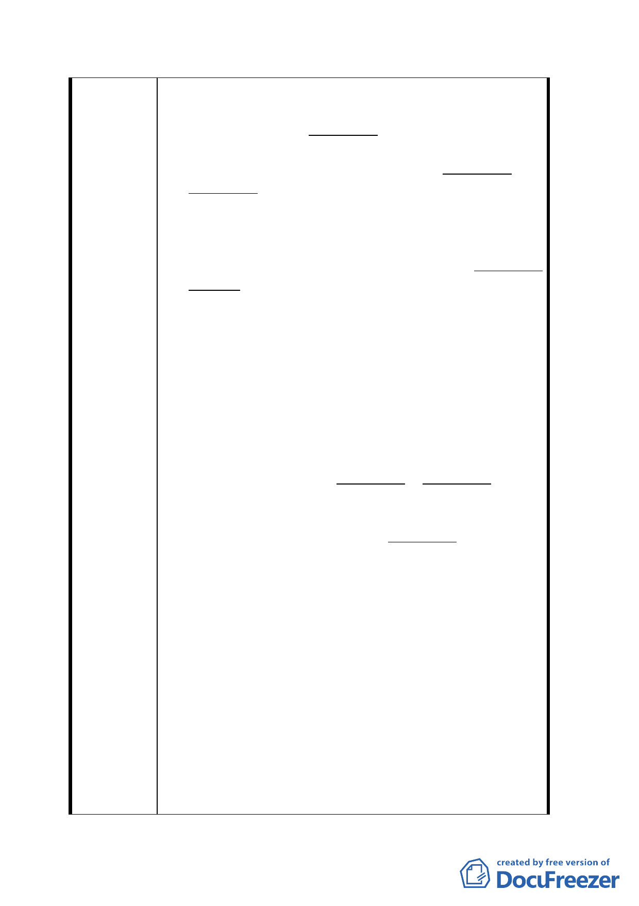

眾，不但無任何往來關係，進入該理教公所一帶
區域之機會等於零。今後如有任何有關本案，敬
請惠予分別直接函告本人。
2. 六十多年前，日本政府投降時，在台北市有兩所
由日本佛教團體所建造之本願寺：東本願寺、及
西本願寺。前者位於武昌街及昆明街交界地帶、
後者位於貴陽街及中華路交界地帶，〈即現在之
理教公所鄰近〉。因兩者均為日本佛教團體所遺
留之不動產，兩所本願寺之土地及建築物之法律
上條件完全相同。由當時之主管機關，日產管理
委員會掌管。
3. 東本願寺及附近之土地及建築物，由於當時之台
北市長游彌先生關係密切之商人，竟以象徵性之
超低價非常迅速的完全承購，而改建為大樓轉售
獲得巨利。但對民等前後多次提出申請承購合法
建築物之基地，即屬西本願寺所有之土地，同一
掌管機關，日產管理委員會，卻每為東推西推而
拖延，大施俗語所稱之“太極拳”。 在中華民
國法律之前人人應是平等。但同一掌管機關，及
日產管理委員會在同一年代，同一政黨當政，相
同之政治環境下，對東本願寺及西本願寺之土地
處分，兩岸所為之決定，卻依人而違。含民在內
之合法所有已逾六十年建築基地〈原屬西本願
寺〉之申請承購案，卻獲與東本願寺完全不同之
對待。僅對此案，法律之前人人卻不平等，至為
明顯。民等所有自完全合法之建築物與基地今日
處境，是早期相關政府，所犯多次不應有之錯誤
所致。政府應給予妥善之法律救助以彌補，數十
年來民之不當而不應有之遭遇。
4. 後來因外島，大陳島失守，當時之軍部將撤退官
兵及眷屬，臨時配置在西本願寺及寺內原地，即
〈現在的理教公所一帶之眾多違章建築群立地
帶〉，及中華路全程〈到近小南門附近〉，人數超
千。先由竹片蓋成屋頂遮雨，非常簡單如戰地
式，勉能供短暫寄宿之兵舍。後來連軍方對這批
官兵及眷屬，無法無天之迅速爆增，擅自改建加
高，完全失控。因占住者之身分為軍人，市府對
此措手無策。後來竟由軍方主導建築，中華商
一一